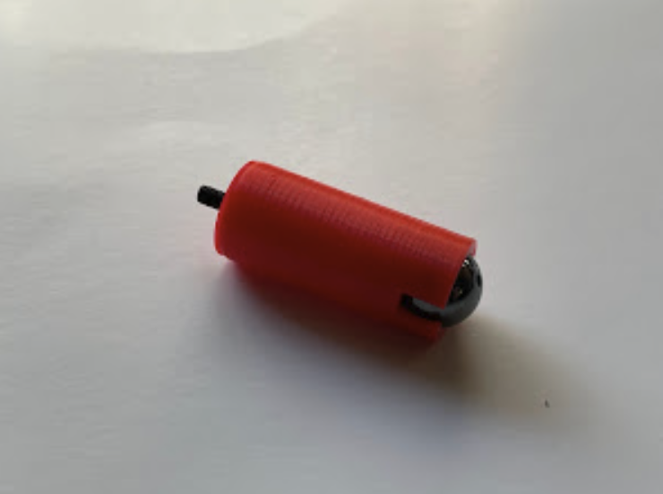
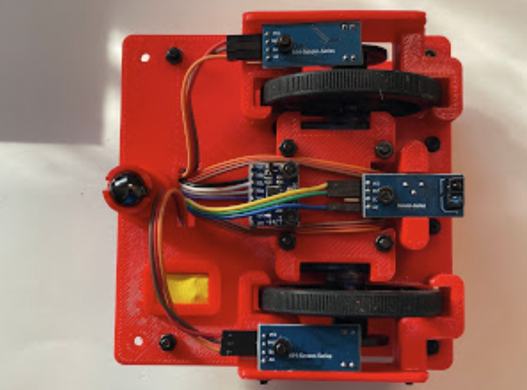

PySTEM Mini Bot Assembly Guide
Step by step instructions to build your own robot
Required Parts
- 3D printed parts (thingiverse)
- Assorted button head M3 screws (amazon)
- 12mm magnetic bead (amazon)
- ACEBOTT ESP32 Max 1.0 development board (amazon)
- FS90MR continuous servo (robotshop)
- 2.4" wheel for continuous servo (robotshop)
- LM393 Speed sensor module (amazon)
- Encoder disk for speed sensor (amazon)
- IR reflective sensor (amazon)
- MPU-6050 gyroscope module (amazon)
- Button switch (amazon)
- Female to female dupont wire (amazon)
- 4 AA battery box with plug (amazon)
Assembly Steps
1. Install Magnetic Bead as Omni Wheel
Use a 30mm screw to go through the ball mount.
Press fit the magnetic bead into the ball mount
Secure the ball mount on the chassis
2. Mount MPU-6050 Module
Fasten 2 12mm screws on the servo cover to mount the MPU-6050.
Place the MPU-6050 with 1.8mm spacers to protect the resistor when fastening.
Fasten the MPU-6050 on the servo cover
Connect the 4-pin dupont wire to MPU-6050, following the color coding exactly.
3. Install Continuous Servos and Wheels
Insert 3 20mm screws through the holes on one side of the chassis
Attach the wheel cover with nuts, keeping them loose for easy wheel installation later.
Snap the wheels onto the continuous servo and fasten the screws.
Attach the speed encoder mount to the wheels and place the encoder disk on the mount.
Assemble the continuous servo with wheel and encoder disk onto the chassis, then tighten the wheel cover screws.
Repeat these steps to install the second continuous servo and wheel on the other side.
4. Install Line Sensors
Put the servo cover on and fasten with 20mm screws.
Install sensors and switch
Use 30mm screws to fasten speed encoders. Connect dupont wire following the colored order.
Use a 25mm screw to fasten the IR reflective sensor. Connect dupont wire following the colored order.
Route all wires through the middle hole to the flat side of the chassis.

Snap the button switch onto the chassis top. Use a thin stripe of tape to make sure it fits tightly. Connect the dupont wire following the colored order.
5. Install ESP32 Board
Insert 3 12mm screws from the bottom of the chassis through to the top. Add 3.5mm spacers to raise the board.
Place the ESP32 board and secure it with nuts
6. Connect Wires
Connect the servo wires:
- Top servo wire to pin 16
- Bottom servo wire to pin 17
Be sure to follow the color coding exactly.
Connect the encoder wires:
- Top encoder wire to pin 13
- Bottom encoder wire to pin 14
Ensure proper color coding.
Connect the remaining components:
- MPU-6050 wire to pin H13
- IR reflective sensor wire to pin 32
- Button switch wire to pin 26
Follow the color coding exactly for all connections.
7. Install Top Covers
Insert 4 45mm screws through the top cover holes. Two of these screws will also secure the battery cover.
Secure the top cover to the chassis
Use two 10mm screws to secure the remaining holes of the battery cover
Install the battery box and connect the power plug to the ESP32 board. Do not turn on the power yet.
8. Final Inspection and Testing
- Double check that all screws are properly fastened
- Verify all wire connections and color coding
- Place the robot car on the ground
- Turn on the power
- Press the button switch
Success Criteria
The robot car should move in a straight line. If it doesn't:
- Turn off the power immediately
- Check all wire connections
- Verify color coding of all connections
- Ensure all components are properly mounted
Next Step: Flash Firmware
Once your robot is assembled, it's time to install the MicroPython firmware on your ESP32.
üíæ Go to Firmware Guide